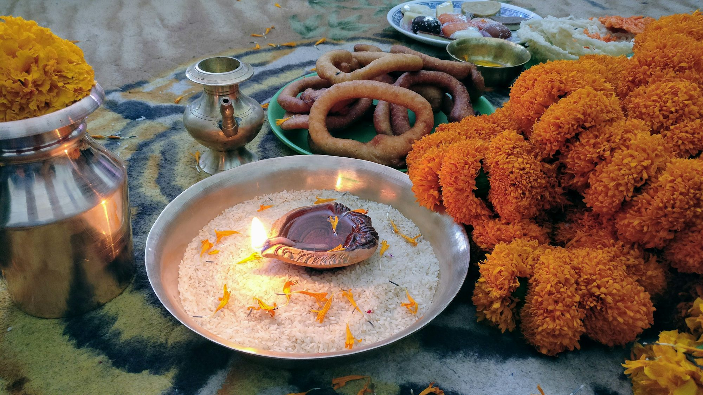

Creative Ways to Celebrate Life's Milestones
Discover innovative ideas and themes for celebrating various life milestones, from birthdays to graduations and everything in between.
Photos collection
Article library
Exploring the Diversity of Cinematic Experiences: A Guide to Movie Theaters
This article explores the diverse types of movie theaters, highlighting how each enhances the cinematic experience and caters to different audience preferences.
Clara Johnson
25-11-28
Exploring the World of Documentary Filmmaking: Truth, Creativity, and Impact
Maya Anderson
26-01-02
Exploring the Evolution of Movie Genres and Their Cultural Impact
This article examines the evolution of movie genres over the decades, highlighting their cultural significance and the ways they reflect societal changes.
Liam O'Sullivan
25-02-05
Creating Memorable Graduation Parties: A Comprehensive Guide
This article explores how to plan and execute an unforgettable graduation party, highlighting themes, decorations, activities, and food that celebrate this important milestone.

Embracing the Spirit of Festivals: A Global Celebration
An insightful exploration of various global festivals that embody cultural richness, community bonding, and artistic expression.
Liam Thompson
25-06-16
The Transformative Power of Museums: Connecting Communities Through Culture
This article explores the various types of museums and their vital role in educating the public, fostering cultural appreciation, and connecting communities.
Sophia Reynolds
25-02-11

Creating Unforgettable Experiences: A Guide to Event Planning
This article provides essential tips and ideas for planning various types of events, ensuring each gathering is memorable and enjoyable for all attendees.
Sofia Thompson
25-01-24
Celebrating Milestones: The Art of Throwing Unforgettable Graduation Parties
Explore essential tips and creative ideas for planning a memorable graduation party that honors achievements and creates lasting memories.